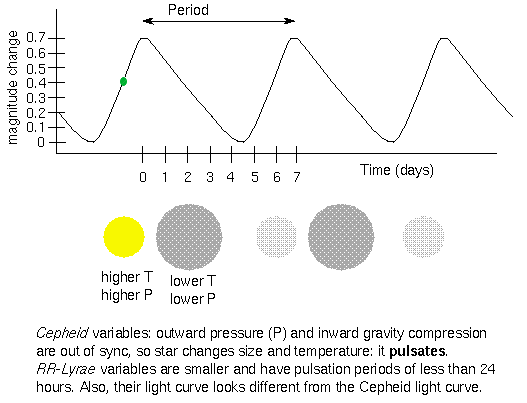

Abstract
U Sagitarii is a Classical Cepheid variable star located in the Messier 25 cluster. 11 observations were made in Cousins V and I bands from 2025-10-14 to 2025-11-15 using the Slooh Chile 2 Telescope. Photometric comparison stars were selected based on angular separation, SNR, and SIMBAD magnitude.

Sinusoidal light curves with the established period of 6.74 days were fit for Cousins V and I band data, with R2 values of 0.9301 and 0.7034 respectively. A strong correlation (r = 0.8450) was found between Vc - Ic color index and Vc magnitude, supporting the existence of the Kappa-mechanism.
Distance calculation using Leavitt's law were accurate for Ic but inaccurate for Vc (δ = 40.77%). Future studies can further explore the Kappa-mechanism after adjusting for dust extinction.